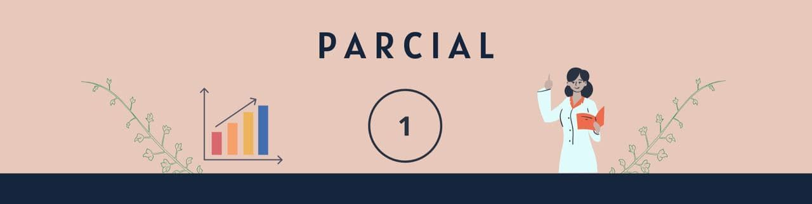

| Fechas: | Tema: | Antes de clase: | Durante clase: |
|---|---|---|---|
| 20 - 26 ene. | Encuadre | 📖 Lectura en Perusall (PDF) | |
| 27 ene. - 02 feb. | 1. Introducción. | 📖 Lectura en Perusall Opcional: (PDF) (WEB) 🎞️ Videolecciones ❓Cuestionario en BB |
🗒️ Práctica 🗃️ Datos |
| 03 - 09 feb. | 2. Trabajar con datos. | 📖 Lectura en Perusall Opcional: (PDF) (WEB) 🎞️ Videolecciones ❓Cuestionario en BB |
🗒️ Práctica |
| 10 - 16 feb. | 3. Resumir datos. | 📖 Lectura en Perusall Opcional: (PDF) (WEB) 🎞️ Videolecciones ❓Cuestionario en BB |
🗒️ Práctica 🗃️ Datos 🎞️ Videos de apoyo |
| 17 - 23 feb. | 4. Visualización de datos. | 📖 Lectura en Perusall Opcional: (PDF) (WEB) 🎞️ Videolecciones ❓Cuestionario en BB |
🗒️ Práctica 🗃️ Datos1 | Datos2 🎞️ Videos de apoyo |
| 24 feb. - 02 mar. | Revisión de correcciones de prácticas y Avance de análisis | ||
| 26 feb. | Fecha límite para: Cuestionarios, y Correcciones de prácticas. |
||
| 28 feb. | Fecha límite para entregar: Avance de análisis. |
🗒️ Documento a entregar (Equipos): Doc | |
Cierre de Parcial 1

🗓️ Materiales y fechas
5️⃣ Revisión de correcciones de prácticas
En esta semana se espera que hayas terminado todas las prácticas realizadas hasta el momento.
El principal objetivo de esta semana es que tengamos oportunidad de repasar conceptos, temas, y análisis, de lo visto.
Durante esta semana son las fechas para terminar de corregir tus prácticas del parcial 1, y el Avance del análisis, en los espacios indicados en Blackboard.
Durante esta semana también es la fecha límite cuando se registrará la puntuación que hayas obtenido en tus cuestionarios. Recuerda que tienes número ilimitado de intentos para realizarlos, y que contará tu calificación más alta.
En el transcurso de la semana tu profesor estará revisando las prácticas corregidas.
La siguiente semana comenzaremos con los contenidos del Parcial 2. Por lo que deberás dedicar tiempo también para leer la lectura indicada (Capítulo 5, Ajustar modelos a los datos) antes de llegar a la primera clase de la siguiente semana (claro, y contestar el cuestionario y prepararte para resolver la práctica).
| Clase 1: | Clase 2: |
|---|---|
|
|